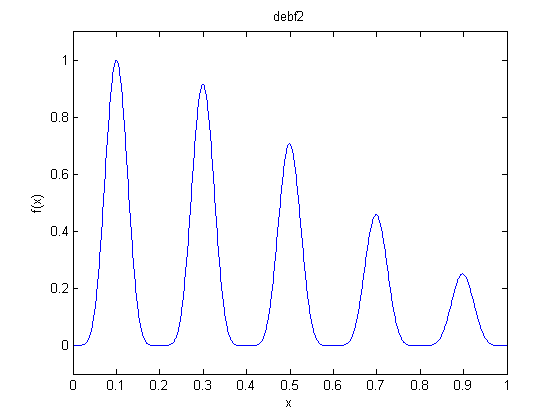
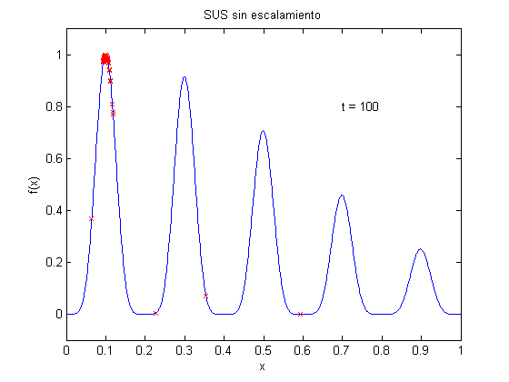
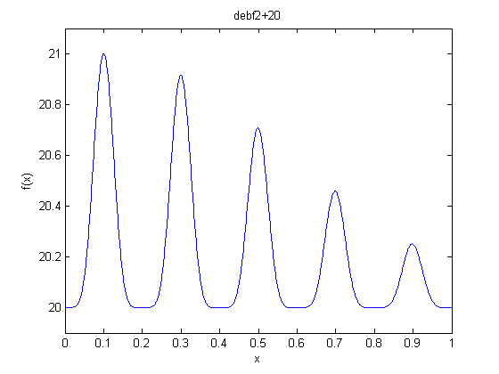
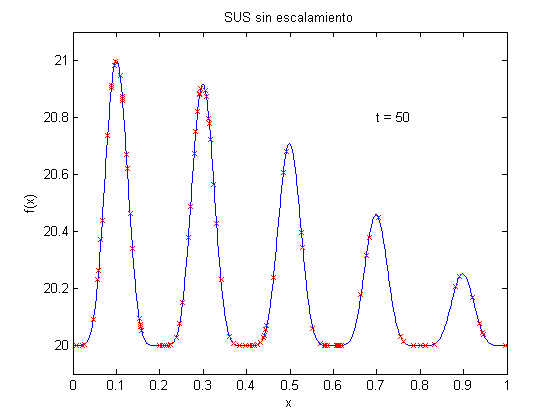
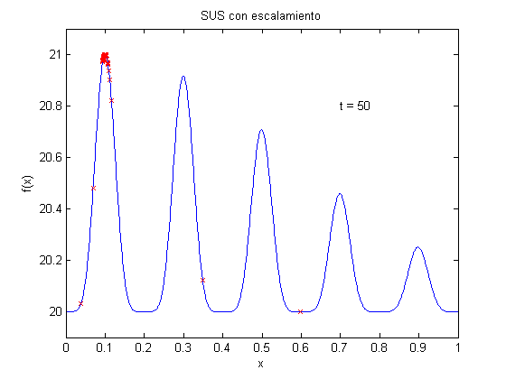
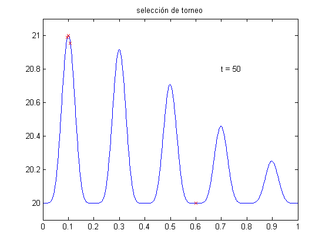

Escalamiento
En este tutorial se hace una breve demostración de la necesidad de escalamiento.
Contents
debf2: función 2 de Deb
Como función objetivo, vamos a usar la función 2 de Deb. A continuación obtenemos su gráfica. El óptimo se encuentra en x=0.1.
t = 0:0.001:1; plot(t,debf2(t)) axis([0 1 -0.1 1.1]) xlabel('x') ylabel('f(x)') title('debf2')
Un AG Simple sobre debf2
Optimizamos la función debf2 con un algoritmo genético de reales con un segmento de 30 bits, pm=0.01 y pc=0.9. Utilizamos un AG simple con selección proporcional (SUS) y lo corremos por 100 generaciones. La población converge al óptimo.
p = population('real',[0 1],30,0.01,0.9); p = random(p,100); generaciones = 100; p = evaluate(p,@debf2); for i=1:generaciones p = sus(p); p = crossover(p); p = mutation(p); p = evaluate(p,@debf2); plot(t,debf2(t)) xlabel('x') ylabel('f(x)') axis([0 1 -0.1 1.1]) title('SUS sin escalamiento') hold on plot(p); str = sprintf('t = %d',i); text(0.7,0.8,str) hold off pause(0.1) end
debf2T: la función 2 de Deb trasladada
Como una segunda función objetivo, trasladamos la función debf2 por 20 en el eje y. A continuación obtenemos su gráfica. El óptimo se encuentra en x=0.1.
debf2T = @(x) debf2(x) + 20; t = 0:0.001:1; plot(t,debf2T(t)) axis([0 1 19.9 21.1]) xlabel('x') ylabel('f(x)') title('debf2+20')
Un AG Simple sobre debf2T
Optimizamos la función debf2T con un algoritmo genético de reales con un segmento de 30 bits, pm=0.01 y pc=0.9. Utilizamos un AG simple con selección proporcional (SUS) y lo corremos por 100 generaciones. La población converge al óptimo. Ahora la población no converge al óptimo.
p = population('real',[0 1],30,0.01,0.9); p = random(p,100); generaciones = 50; p = evaluate(p,debf2T); for i=1:generaciones p = sus(p); p = crossover(p); p = mutation(p); p = evaluate(p,debf2T); plot(t,debf2T(t)) xlabel('x') ylabel('f(x)') axis([0 1 19.9 21.1]) title('SUS sin escalamiento') hold on plot(p,[19.9 21.1]); str = sprintf('t = %d',i); text(0.7,20.8,str) hold off pause(0.1) end
Un AG con selección proporcional y escalamiento
A continuación incluimos escalamiento lineal y la población sí converge al óptimo.
p = population('real',[0 1],30,0.01,0.9); p = random(p,100); generaciones = 50; p = evaluate(p,debf2T); for i=1:generaciones p = scale(p); % Escalamiento lineal p = sus(p); p = crossover(p); p = mutation(p); p = evaluate(p,debf2T); plot(t,debf2T(t)) xlabel('x') ylabel('f(x)') axis([0 1 19.9 21.1]) title('SUS con escalamiento') hold on plot(p,[19.9 21.1]); str = sprintf('t = %d',i); text(0.7,20.8,str) hold off pause(0.1) end
Un AG con selección de torneo
En lugar de selección proporcional y escalamiento podemos obtener los mismos resultados con selección de torneo.
p = population('real',[0 1],30,0.01,0.9); p = random(p,100); generaciones = 50; p = evaluate(p,debf2T); for i=1:generaciones p = tournament(p); p = crossover(p); p = mutation(p); p = evaluate(p,debf2T); xlabel('x') ylabel('f(x)') plot(t,debf2T(t)) axis([0 1 19.9 21.1]) title('selección de torneo') hold on plot(p,[19.9 21.1]); str = sprintf('t = %d',i); text(0.7,20.8,str) hold off pause(0.1) end